An autoregressive (AR) model predicts each piece of an ordered sequence from its earlier pieces, called the prefix. “Auto” refers to the history of the same sequence; outputs need not be numeric regression targets.
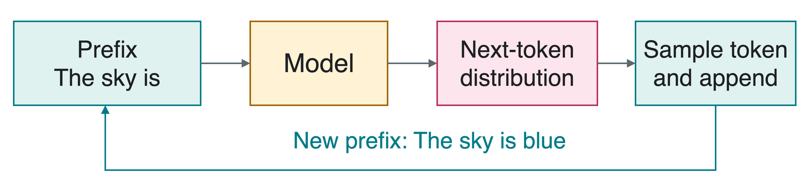
A token is a text piece, such as a word or part of a word. We use one word per token in our toy examples.
A modality is a form of data. Text tokens and image pixels can both be ordered into sequences.
During generation, the model’s sampled outputs become part of the next input.
The Probability Chain Rule
Let x_1,\ldots,x_T be a sequence of length T. Write x_{<t} for the pieces before position t, and \theta for learned model parameters.
The first factor has no earlier piece to condition on. A conditional generator can also include a prompt in every factor.
The chain rule does not assume independent pieces. We learn conditional distributions that can depend on the earlier context.
A Completion Probability
Fix the prompt “The sky is”. A special end-of-sequence (EOS) token tells the generator to stop.
Suppose a toy model assigns probability 0.6 to blue after this prompt, then probability 0.8 to EOS after “The sky is blue”.
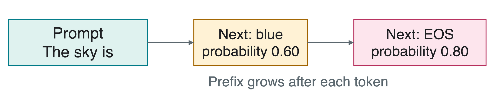
What is the probability of this complete two-token continuation?
p_\theta(\text{blue},\text{EOS}\mid\text{The sky is})=0.6\times0.8=0.48. The second probability uses the updated prefix. This is not the probability of the prompt itself.
Sampling and Greedy Decoding
Decoding selects outputs from the model’s distributions. Greedy decoding picks the highest-probability token. Sampling makes a random choice using those probabilities.
For a color-only choice after “The sky is”, use this toy distribution:
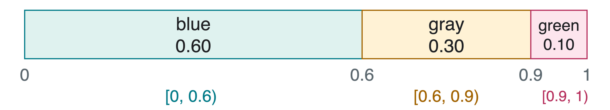
Draw u uniformly from [0,1). What token does u=0.75 select, and what would greedy decoding choose?
Sampling selects gray; greedy decoding selects blue. Greedy choices do not necessarily give the most probable complete sequence.
The Generation Loop
Start with a prompt. maxNewTokens is a chosen limit on how many additional tokens may be generated.
sequence=Copy(prompt)
fort=1, …, maxNewTokens
distribution=Model(sequence)
token=Sample(distribution)
iftoken==EOS: break
Append(sequence, token)
returnsequence
The model’s parameters stay fixed. Each new distribution conditions on the actual prefix accumulated so far.
Stop at EOS or the length limit. Sampling does not guarantee that EOS will arrive quickly.
Training with the Correct Prefix
Teacher forcing trains next-token predictions using the true earlier tokens from a dataset, rather than the model’s sampled earlier tokens.
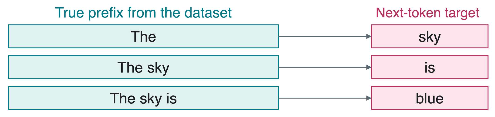
Average negative log-likelihood (NLL) on a training sequence is
EOS is also a target. Each prediction sees only the earlier tokens.
Generation uses sampled prefixes, so early mistakes can change later predictions.
Recurrent Neural Networks
A recurrent neural network (RNN) repeatedly updates a hidden stateh_t, a fixed-size vector summarizing the prefix. The same update parameters are reused at every position.
An embeddinge_t is a learned numeric vector representing input token x_t:
h_t=F_\theta(e_t,h_{t-1}).
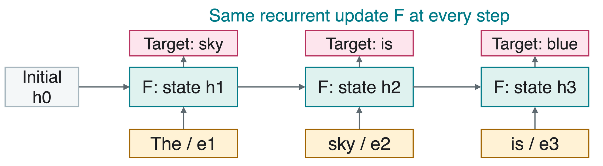
After reading x_t, state h_t helps predict x_{t+1}. The state need not preserve every detail of the prefix.
A Small Recurrent Update
Use a toy scalar state instead of a vector:
h_t=\tanh(0.5h_{t-1}+e_t).
The hyperbolic tangent, \tanh, maps real inputs into (-1,1). Here the chosen weights and token inputs are illustrative, not learned from text.
Starting at h_0=0, let the input for The be e_1=1: h_1=\tanh(1)\approx0.762.
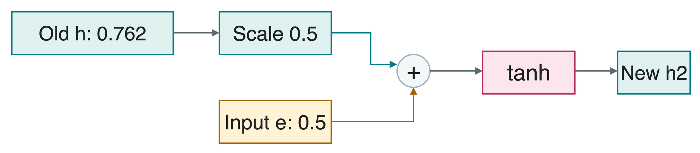
For sky, let e_2=0.5. What is h_2?
h_2=\tanh(0.5\times0.762+0.5)\approx0.707. The update combines old context with the new input.
Hidden States to Token Probabilities
An output head assigns a logit, or unnormalized score a_j, to token j. The vocabulary is the set of V allowed tokens.
Softmax gives token j’s probability p_j:
p_j=\frac{e^{a_j}}{\sum_{k=1}^{V}e^{a_k}}.
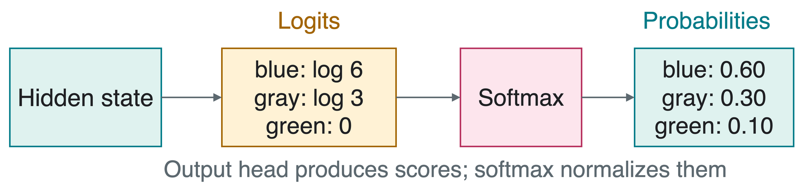
In this three-color illustration, logits (\log6,\log3,0) give exponentials (6,3,1). Dividing by their sum 10 gives (0.6,0.3,0.1).
Long Dependencies and Gradients
A dependency is a relationship between sequence positions. Here the singular subject key calls for is, despite the nearer plural word cabinets.
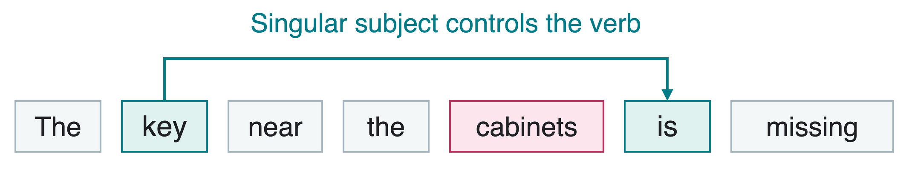
Training backpropagates through repeated state updates. Vanishing gradients shrink the learning signal to earlier steps; exploding gradients make it grow excessively.
Repeated derivative factors illustrate the issue:
0.5^{10}\approx0.001,\qquad 1.5^{10}\approx57.7.
Recurrent memory must retain relevant information through many updates. Gated architectures help control that information flow.
Long Short-Term Memory
Long Short-Term Memory (LSTM) is a gated recurrent architecture. It carries a cell statec_t as a memory path, alongside hidden state h_t used for prediction.
A gate controls information flow component by component. Sigmoid \sigma(v)=1/(1+e^{-v}) produces values between 0 and 1.
Forget gatef_t: keep old cell memory.
Input gatei_t: write proposed content g_t, the candidate produced with \tanh.
Output gateo_t: expose transformed cell memory as hidden state.
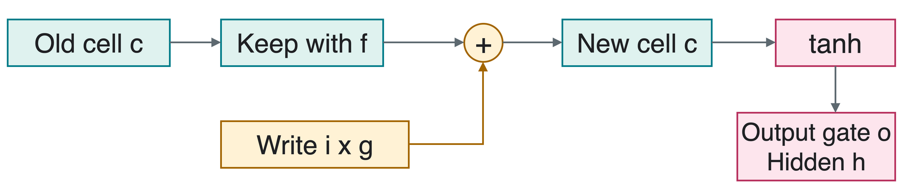
LSTM Updates and a Worked Step
Let v_t=[e_t;h_{t-1}]: concatenation appends the two vectors. The W matrices and b bias vectors below are learned parameters; \odot means elementwise multiplication.
For one scalar component, suppose c_{t-1}=0.8 and the computed gate/candidate values are f_t=0.9, i_t=0.2, g_t=0.5, o_t=0.7.
c_t=0.9(0.8)+0.2(0.5)=0.82,h_t=0.7\tanh(0.82)\approx0.473. Keeping memory and exposing it are different operations.
Gated Recurrent Units
A gated recurrent unit (GRU) has one recurrent hidden state, without a separate LSTM-style cell state.
The reset gater_t controls use of old state when computing candidate n_t.
The update gatez_t blends the candidate and old state. Using the PyTorch convention,
h_t=(1-z_t)\odot n_t+z_t\odot h_{t-1}.
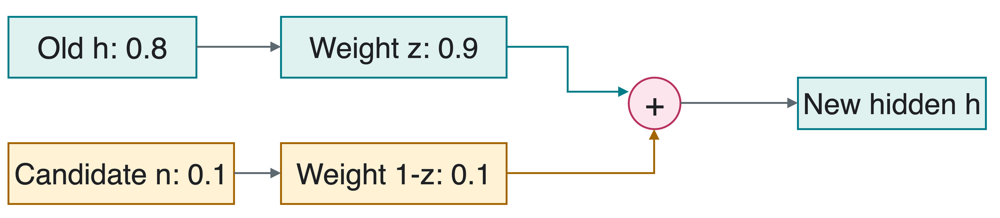
h_t=0.1(0.1)+0.9(0.8)=0.73. In this convention, an update gate near 1 preserves more old state.
Images as Ordered Sequences
PixelCNN uses a convolutional neural network (CNN) to predict pixels autoregressively. Raster order means left to right across each row, then top to bottom.
The image is spatial data; the generation procedure imposes an ordering on it.
Aaron van den Oord, Nal Kalchbrenner, and Koray Kavukcuoglu (2016), Pixel Recurrent Neural Networks. The paper also introduces PixelCNN.
Causal Masks Prevent Peeking
Causal prediction uses earlier positions, not the target or future values. A mask fixes selected convolution weights to zero so forbidden inputs cannot affect the prediction.
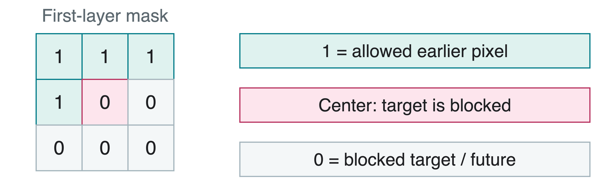
At the raw-input layer, the current pixel must also be excluded. Otherwise the network could copy the answer it is supposed to predict.
Training knows the full image, but predictions must respect the mask. Generation still fills pixels in order.
A Pixel-by-Pixel Probability
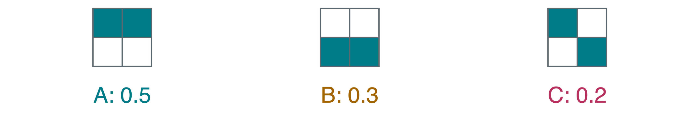
A and C start with 1: 0.5+0.2=0.7. Only A has prefix (1,1), giving conditional probability 0.5/0.7=5/7 for the second pixel.
Event along the branch for A
Conditional probability
x_1=1
0.7
x_2=1 given x_1=1
5/7
(x_3,x_4)=(0,0) given prefix (1,1)
1\times1
p(A)=0.7\times(5/7)\times1\times1=0.5.
One Factorization, Different Architectures
Autoregression specifies which context is allowed. The architecture determines how that context is represented.
Architecture
How it uses the prefix
Basic RNN
One recurrent hidden-state vector
LSTM
Hidden state plus gated cell memory
GRU
One gated recurrent state
PixelCNN
Masked convolutions over earlier pixels
Transformer decoder
Attention over earlier token representations
Attention forms weighted combinations of representations. The next lecture develops this idea for Transformers.
Stacking recurrent layers adds depth at each position; each layer still maintains its own state across positions.
Quick Check
At generation time, should the next input use a sampled token or an unavailable correct answer?
Is the LSTM cell state c_t the same object as its hidden state h_t?
Can an autoregressive image model predict a pixel using that same raw pixel as input?
1. The sampled token. Teacher forcing uses correct earlier tokens during training, not ordinary generation.
2. No. The cell carries memory; the output gate controls how it is exposed as the hidden state.
3. No. That leaks the target. The causal mask must block it.
Takeaways
Autoregressive models factor a sequence probability into conditional probabilities.
Training uses known next-token targets; generation repeatedly chooses and appends outputs.
EOS and a length budget give explicit stopping rules.
RNNs summarize the prefix; LSTMs and GRUs control recurrent information with gates.
PixelCNN imposes an ordering and masks forbidden pixel inputs.
The same generation principle can use different neural architectures, including Transformers.